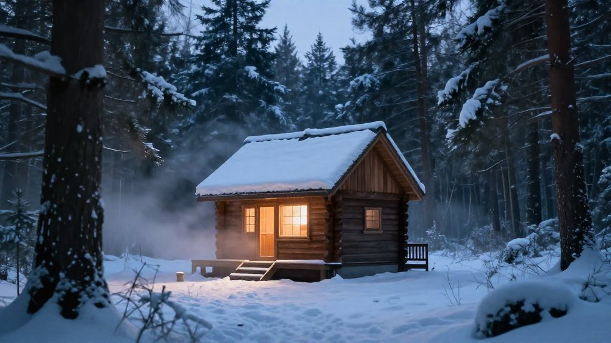
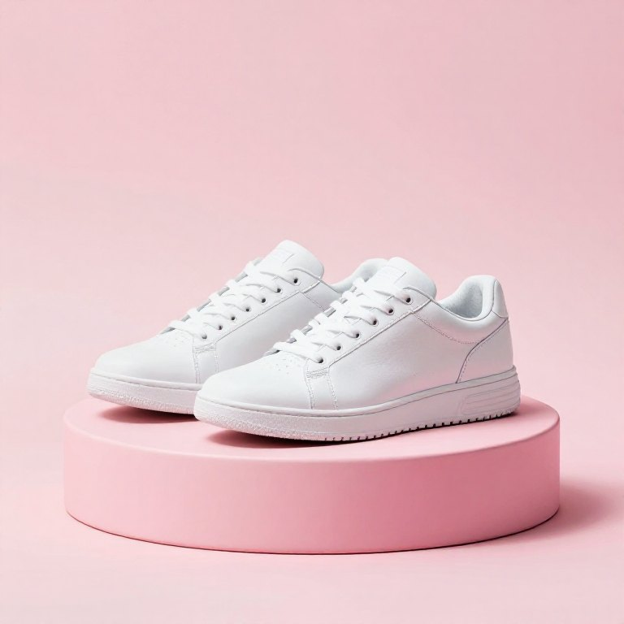
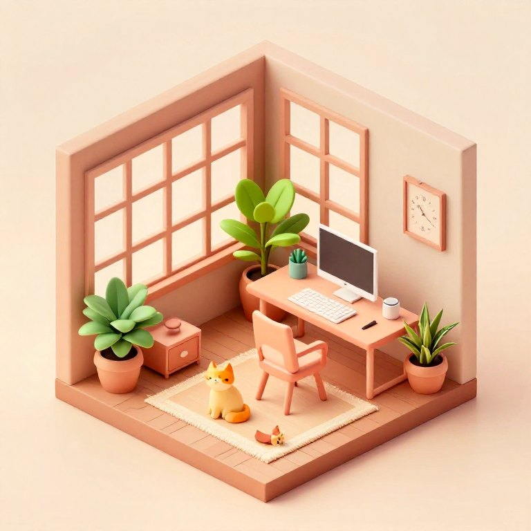
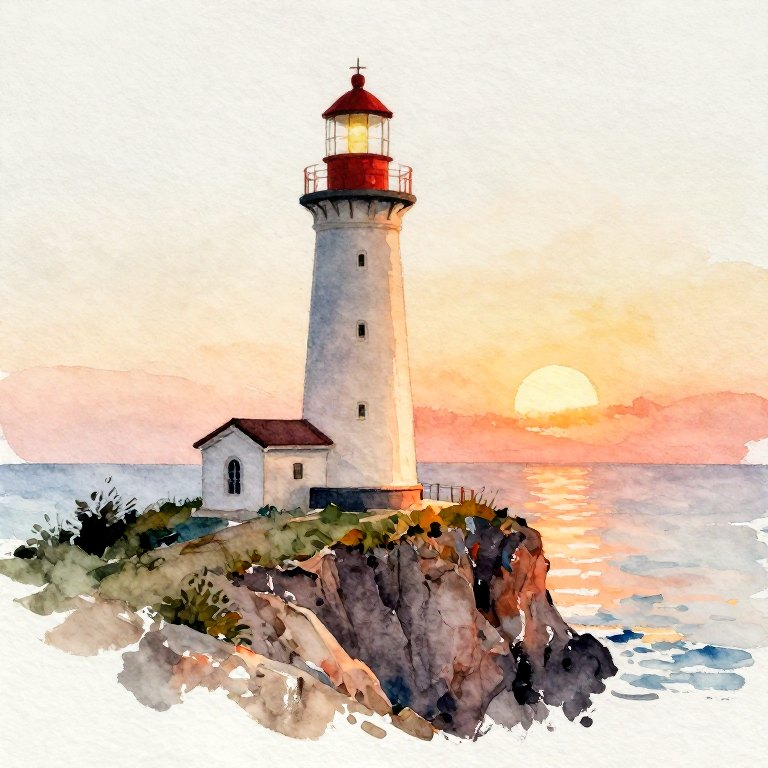
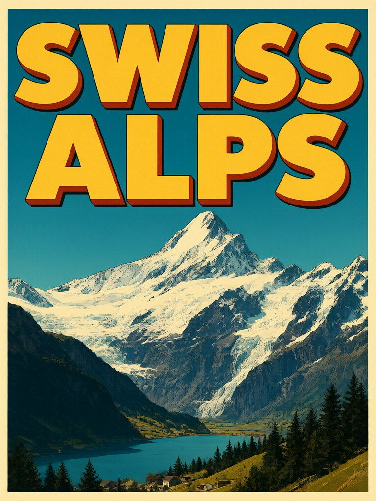
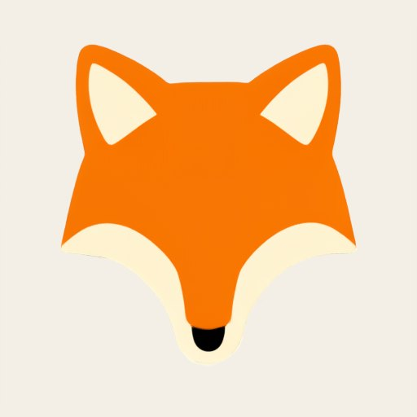

Chat with an image model: create, edit with a brush, upscale to 4K and export transparent PNG, WebP or SVG. Free and open source. No cloud, no account, no Python setup.
From the first prompt to a 4K, transparent or vector file, without leaving the window.
Separate chats, each with its own model and effort level. The result of one message becomes the starting photo of the next.
Paint a mask, say what should change. Only the edited pixels are pasted back into your full-resolution original.
×2, ×4, 2K, 4K or 8K with Real-ESRGAN, or chain it after every render: 512 px draft now, 4K a minute later.
Real transparent backgrounds and vector tracing for logos, icons and flat art, exported in one click.
Paste a Hugging Face URL. ImageLoom detects the family, picks a file that fits, downloads what it needs and adds it to the picker.
Native window, about 160 MB without models, a local server that starts and stops with the app. No telemetry, no account.
imageloom "a red fox in snow" --upscale 4k, plus ready-made skills for Claude Code, Cursor and Hermes.
Time estimates come from timings measured on your own machine, and say "estimate" until a model has been timed.
Qwen-Image 2.1 Turbo and Z-Image Turbo, rendered on a base MacBook (M4, 16 GB).






The first-run wizard lists everything it will download (engine, default model about 18 GB, upscalers) before it starts. After that the app works offline.
| Platform | Get it | Notes |
|---|---|---|
| macOS (Apple Silicon) | DMG · brew install --cask elapen/tap/imageloom | Not notarized: right-click → Open the first time. |
| Windows 10/11 x64 | Setup.exe or portable zip | Experimental: built on a Mac, not yet run on real Windows. Needs Vulkan. SmartScreen will warn. |
| From source | pip install -r core/requirements.txt && python3 core/server.py | Python 3.9+, open http://127.0.0.1:7870. |
Powered by stable-diffusion.cpp (Metal on Mac, Vulkan on Windows).
| Model | Create | Edit | Transparent | Status |
|---|---|---|---|---|
| Qwen-Image 2.1 Turbo (Q8, default) | yes | yes | yes | verified on M4 16 GB |
| Z-Image Turbo (Q4_K) | yes | no | no | verified on M4 16 GB |
| FLUX.1 · SDXL · SD 1.5 | yes | no | no | experimental recipes |
Yes. The network is used only for downloads you trigger (models from Hugging Face, the engine from GitHub). Prompts and images never leave your computer, and there is no telemetry.
On a base M4 with 16 GB: a 768 px image takes about 4 minutes with Qwen-Image or 2.5 minutes with Z-Image. The best workflow is a small draft, then upscale the keeper to 4K.
No. Diffusion models have none and the default text encoder has its refusal behaviour removed, so you are responsible for what you create and share. See the README for the responsible-use notes.
That depends on each model's license; the default Qwen weights are research / non-commercial, Z-Image is Apache-2.0. ImageLoom's own code is MIT.